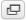

Viewing Emails and Attachments¶
Double-clicking a message in the list opens it in full size or in a new window, depending on your message display preferences.
The header block now shows all message headers including a photo of the sender if one is found in your address book.
Open in a New Window¶
While looking at a message in the preview pane, it can be opened in a new window by pressing the  button.
When opening a message in full-size view, the toolbar above shows buttons for possible actions to choose for this message.
Move to Another Folder¶
Use the drop-down list on the top right of the toolbar to move the current message to another folder. When a folder is selected from that list, the message is moved there right away and the window will display the next message in the list.
Jump to the Next or Previous Message¶
Use the arrow buttons on the right side of the headers box to jump to the next or previous message on the folder. If there’s no next or previous message, the buttons will be disabled.
Add Contacts to your Address Book¶
Every email address referenced in the current message, either as sender or recipient, can be saved
to the address book with a single click on the Add contact  icon right next to it.
Of course it won’t be saved twice if a contact with that email address already exists in the address book.
icon right next to it.
Of course it won’t be saved twice if a contact with that email address already exists in the address book.
View or Download Attachments¶
If the opened message has any files attached, these are listed on the right, next to the message text. Click on the file name to open or download it. If the file can be displayed directly in the web browser, a preview window will be opened showing the attachment. This will happen for images, text files and PDFs if your browser indicates being able to display them.
Otherwise clicking the file name will initiate the download process and a dialog will most likely appear, asking you where to save the file. If that doesn’t happen, check the default “Downloads” folder on your computer for the attachment file.
Forcing Attachment Download¶
For files being opened in the browser directly, you can force download by either clicking on the Download link in the preview window or by right-clicking the attachment file name in the message view and then choosing “Save Link As...” from the browser’s context menu.
Image Previews¶
If enabled in the Preferences images attached to the message are listed as previews (aka “thumbnails”) right below the message text. Each image has links right next to it which let you either open the image in full size (Show) or Download it to your computer’s hard drive.